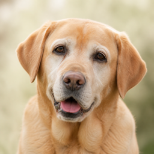
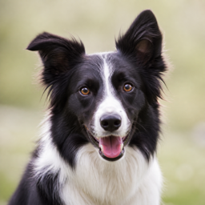

A clear rating for every trail. A personal match for your dog.
Every trail carries two separate judgements, and we never mix them.
Terrain, exposure, hazards. The same for every dog.
This trail against your dog's fitness, age, health and build.
First we describe the mountain, before any dog is involved. This is what becomes the trail rating, and it reads the same for a chihuahua and a husky.
Choose a rating to see what it means.

Surface underfoot, exposed ledges and drop-offs, scree, ladders and cables, and anything that can cut or burn a paw.
Distance, how much you climb, and how much you come back down, because long descents are their own kind of work.
How much shade the route holds, how hot it runs, water along the way, and whether dogs are allowed at all.
Your dog's fitness sets three comfortable limits. Puppies, seniors, health conditions and extreme builds lower them. Leave a fitness field blank and it gets a neutral default, never a guess.
Fitness answers how far and how steep. Behaviour answers where. You can also tell us about recall, reactivity, prey drive, how your dog is around livestock, traffic and crowds, heat tolerance, and the walk length you prefer.
These questions work differently from the rest of the profile. Leave one blank and we say nothing about it in either direction: no penalty, and no reassurance either. Telling you a route suits a dog whose recall we never asked about is the one mistake worth avoiding.
Same trail, two dogs, two scores.
12 km · 700 m climb · mixed ground · 30% shade

Bruna6 years, Labrador, feels the heat
Luna3 years, border collie, very fitChecked against official sources, such as the tourist board or park, with directions you can follow.
We checked it, but something is still missing. The trail page says what.
From OpenStreetMap. Not checked by us yet.
The score is a guide, not a guarantee. When in doubt, choose the gentler trail, and your vet knows your dog best.
Ogni sentiero porta con sé due giudizi separati, e non li mescoliamo mai.
Terreno, esposizione, pericoli. Uguale per tutti i cani.
Questo sentiero rispetto a forma, età, salute e corporatura del tuo cane.
Prima descriviamo la montagna, senza ancora considerare nessun cane. È questo che diventa la classificazione del sentiero, ed è identica per un chihuahua e per un husky.
Scegli una classificazione per scoprirne il significato.
Il fondo sotto le zampe, cenge esposte e salti di roccia, ghiaioni, scale e cavi, e tutto ciò che può tagliare o ustionare un polpastrello.
Distanza, quanto si sale e quanto si ridiscende, perché le lunghe discese sono una fatica a sé.
Quanta ombra offre il percorso, quanto scalda in stagione, l'acqua lungo il cammino e se i cani sono ammessi.
La forma fisica del tuo cane stabilisce tre limiti comodi. Cuccioli, cani anziani, problemi di salute e corporature estreme li abbassano. Se lasci in bianco un campo della forma fisica, riceve un valore neutro, mai una supposizione.
La forma fisica risponde a quanto lontano e quanto in salita. Il comportamento risponde a dove. Puoi raccontarci anche del richiamo, della reattività, dell'istinto predatorio, di come sta il tuo cane con bestiame, traffico e folla, della tolleranza al caldo e della durata di passeggiata che preferisci.
Queste domande funzionano diversamente dal resto del profilo. Se ne lasci una in bianco non diciamo nulla al riguardo, in nessuna delle due direzioni: nessuna penalità e nemmeno una rassicurazione. Dire che un percorso va bene per un cane di cui non abbiamo mai chiesto il richiamo è l'errore da evitare davvero.
Stesso sentiero, due cani, due punteggi.
12 km · 700 m di dislivello · terreno misto · 30% d'ombra
Controllato su fonti ufficiali, come l'ente turistico o il parco, con indicazioni che puoi seguire.
Lo abbiamo controllato, ma manca ancora qualcosa. La pagina del sentiero dice cosa.
Da OpenStreetMap. Non ancora controllato da noi.
Il punteggio è una guida, non una garanzia. Nel dubbio, scegli il sentiero più gentile: il tuo veterinario conosce il tuo cane meglio di tutti.